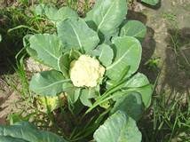
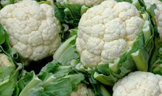
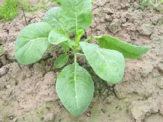
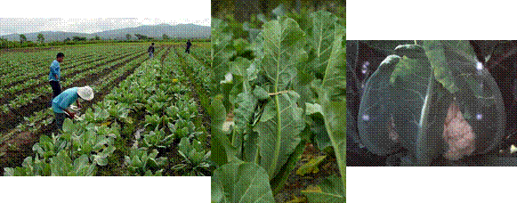
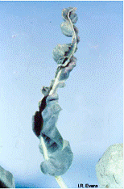
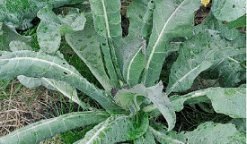

HORT 281 :: Lecture 13 :: ORIGIN, AREA, PRODUCTION, VARIETIES, PACKAGE OF PRACTICES FOR COLE CROPS CAULIFLOWER

Origin, area, production, varieties, package of practices for COLE CROPS CAULIFLOWER
CAULIFLOWER - Brassica oleracea var. Botrytis
Family: Cruciferae
(Chromosome Number: 2n=18)
Origin and History
The name cauliflower consists of two Latin words, ‘caulis’ and ‘floris’, former means cabbage and the later means flowers. It is originated from wild cabbage known as ‘Cole warts’, through mutation, human selection and adoption. Dr. Jemson at Saharanpur introduced it to India in 1822 during the period of East India Company (Swarup and Chatterjee, 1972). The original introduction was “Cornish types”, which originated in England followed by temperate types, originated in Germany and Netherlands in 18th century. The present tropical Indian cauliflower developed as a result of inter crossing between European and Cornish types. Another development also took place in India, resulting in tropical types resistant to high temperature and high rainfall. These types are grown in Indian plains from May to September followed by temperate types commonly known as snowball cauliflower got established around Mediterranean region particularly in Italy. Its further development and improvement were achieved in North and North Western Europe extending its cultivation to 60oN. The development of Indian cauliflower types made it possible to extend its growing area in the tropics and subtropics of the world. The crop is presently cultivated from 11oN to 60oN. The different types of cauliflower like Cornish, Northerns, Roscoff, Angers and Erfurts originated from the Italians independently in different region like Cornish and northern England, Roscoff and Angers in France and Erfurts or Snowball in Germany and the Netherlands. Cornish type, perhaps the first to be introduced in India, has itself gone out of cultivation after contributing many genes to Indian varieties like resistance to black rot, self-incompatibility, curd flavour, open plant habit, exposed yellow loose curds etc. (Swarup and Chatterjee, 1972).
Nutritive Value and Uses
The edible part of cauliflower is known as curd, which consists of a shoot system with short internodes, branches apices and bracts. The edible portion of this vegetable is approximately 45 per cent of the vegetable as purchased. It has high quality of proteins and peculiar in stability of vitamin C after cooking. It is rich in minerals such as potassium, sodium, iron, phosphorus, calcium, magnesium etc. It also contains vitamin A (Nath, 1976) Conew (1959) has made an analysis on fresh weight basis. Cauliflower contains 92.7 per cent water and the food value per 100 g of edible ascorbic acid 70 mg, thiamine 0.2 mg, riboflavin 0.1 mg and niacin 0.57 mg. Sulphur containing compounds viz; hydrogen sulfide methanethiol, ethanethiol, propanethiol and dimethyl sulfide in addition to acetaldehyde and 2- methyl propanol have been identified in cooked cauliflower. Cauliflower seedlings are used for salad and green. The curd is used in curries, soups, and pickles. In abundant areas of production, cauliflower curd is cut in to pieces, dried and preserved for off-season use. The therapeutic effect of cauliflower has been well documented. The inflorescence extract has been used in the treatment of scurvy, as a blood purifier and as an antacid. The seeds have contraceptive properties. Cauliflower extract has been reported to be effective in the inhibition of initiation and promotion of carcinogenesis in in vitro. Potential chemo preventive agents include ascorbic acid, carotenoids, tocopherols, isothiocyanates, indoles and flavonoids.
|  |  |
Area and Production
India is the largest producer of cauliflower in the world. Out of total 5335447 ha of land under vegetables, cauliflower occupies nearly 4.4 per cent area under cauliflower during the year 1998-99. Production of cauliflower was 4680600 tones during the year 1998-99. The area, production and productivity of cauliflower from 1987-88 to 1998-99 are given in Table 1.
Table 1: Area, Production and Productivity of Cauliflower in India
Year |
Area (in 000’HA) |
Per cent of total area |
Production (in 000’MT) |
Per cent of total production |
Productivity to MT / HA |
1987-88 |
75.1 |
1.8 |
558.60 |
1.10 |
7.4 |
1991-92 |
202.8 |
3.6 |
2998.10 |
5.10 |
14.8 |
1992-93 |
230.7 |
4.6 |
3612.20 |
5.70 |
15.7 |
1993-94 |
188.5 |
3.9 |
2872.50 |
4.40 |
15.2 |
1994-95 |
216.1 |
4.3 |
3244.10 |
4.80 |
15.0 |
1995-96 |
220.0 |
4.1 |
3244.10 |
4.80 |
15.0 |
1996-97 |
233.9 |
4.1 |
2474.00 |
3.50 |
11.20 |
1997-98 |
248.2 |
4.4 |
4471.00 |
6.20 |
18.00 |
1998-99 |
155.4 |
4.4 |
4680.60 |
5.30 |
18.40 |
Source: Horticultural Data Base (2000) NHB, Gurgaon.
The growing belts in different states in the country are as given below (NHB, 2000).
- Uttranchal : Nainital, Pithaurgarh and Dehradun
- Uttar Pradesh Plains
- Himachal Pradesh : Shimla, Kullu and Sirmour
- Haryana .
- Rajasthan.
- Bihar : Santhal, Pargana, Purina, Katihar, Sitamarhi, Samastipur, Saharsa, Dhanbad, Patna, Nalanda, West and East Champaran, Muzzafarpur, Vaishali, Bhagalpur, Darbangha and Madhubani
- Gujarat: Mehsana, Khera, Ahmedabad and Baroda..
- Maharashtra: Nasik, Nagpur and Kolhapur.
- Orissa.
- Karnataka: Hassan, Bangalore (Rural and Urban), Kolar and Mysore.
Apart from India, the other major producers of cauliflower in the world are China, France, Italy, UK, USA, Spain, Poland, Germany and Pakistan.
Classification
Swarup and Chatterjee (1972) classified the cauliflower varieties in various groups as given in Table 2.
Table 2: Classification of cauliflower varieties
Cauliflower types |
Country of origin |
Probable period of first cultivation |
Characters |
Italian or original |
Mediterranean |
16th Century |
Plants short; leaves erect broad with rounded tips, bluish green, curds good not protected. |
Cornish |
England |
Early 19th Century |
Plants vigorous, long stalked; leaves loosely arranged, broadly wavy; curds flat; irregular, loose, not protected, yellow, highly flavoured. |
Northerns |
England |
19th Century |
Leaves petioles, broad, very wavy, serrated; curds good, well protected. |
Roscoff |
France |
19th Century |
Plants short; leaves long erect, slightly wavy with pointed tip, midrib prominent, bluish green; curds white or creamy, hemispherical and well protected. |
Angers |
France |
19th Century |
Leaves very wavy, serrated, grayish green, curds solid and well protected. |
Erfurt and snowball |
Germany and Netherlands |
18th Century |
Plants dwarf; leaves short, erect, curds solid and well protected. |
Indian cauliflower |
India |
Late 19th Century |
Plants short, long stalked; leaves loosely arranged, broadly wavy; curds flat, somewhat loose, yellow to creamy, not protected and highly flavoured. |
Crisp (1982) has also classified the groups of cauliflower according to the phylogeny as given in Table 3.
Table 3 Classification of Cauliflower on the Basis of Phylogeny
Group name |
Characteristics |
Common types |
Italian |
Very diverse, include both annual and biennials and curds with peculiar conformations colors |
Jezi, Naples (Autumn Giant), Romanesco and Flora Blanca. |
North European annuals |
Developed in Northern Europe for at least 400 years. Origin unknown, perhaps Italian Eastern Mediterranean. |
Alpha, Mechelse, Erfurt and Danish. |
North West European biennials |
Developed from Italian material with in 300 years |
Angers, old English, Roscoff St. Malo, Walcheran. |
Asian |
Recombinants of European annuals and biennials, developed within last 250 years, adapted to tropics |
Four maturity groups are recognized by Swarup and Chatterjee (1972). |
Australian |
Recombinants of European annuals and biennials and perhaps Italian stock, developed during the last 200 years. |
Not yet been categorized. |
Further, cauliflower varieties can also be classified on the basis of maturity. Most of the early Indian varieties of cauliflower are called by the name of the month in which the curds are mature and become ready for harvest, viz., ‘Kunwari (September-October maturity), Katki’ (October-November maturity), ‘Agahani’ (November maturity), ‘Posi’ (December maturity), ‘Maghi’ (January maturity). Most of these varieties are highly heterozygous for maturity, plant growth and curd traits. The cultivars are classified into five groups on the basis of curd maturity (Table 4).
Table 4 Classification of Cauliflower on the Basis of Maturity
Maturity |
Varieties |
Temperature requirement for curd initiation and development |
Early |
Early Kunwari |
20oC - 27oC |
September maturity |
Pusa Early synthetic |
|
October maturity |
Pusa Deepali |
20oC - 25oC |
(Mid October-Mid November) |
Pant Gobhi-2 |
|
Mid Early |
Improved Japanese |
16oC - 20oC |
November maturity |
Pusa Hybrid-2 |
|
(Mid November-Mid December) |
Pusa Hybrid-3 |
|
|
Pusa Sharad |
|
|
Pant Gobi-4 |
|
Mid Late |
Pusa Synthetic |
12oC - 16oC |
December maturity |
Pusa Shubra |
|
(Mid December-Mid January) |
Pusa Himjyoti |
|
|
Punjab Giant-35 |
|
Late Snowball |
Pusa Snowball-1 |
10oC - 16oC |
|
Pusa Snowball K-1 |
|
Varieties / Hybrids
dania
It is developed from IARI, Regional Station, and Kalimpong for eastern hilly area. Plants are strong having medium sized curd. This variety is tolerant to the stress conditions.
EARLY KUNWARI
It is an early variety suitable for growing in Punjab, Haryana, Himachal Pradesh and Delhi, selected by PAU, Ludhiana. The leaves are bluish green heavy with waxy bloom. Curds are semi-spherical with even surface and ready for harvesting from mid September to mid-October. This variety has been recommended for sowing from middle to the end of May.
HISAR-1
It suitable for mid late season under Haryana conditions. It bears medium to large size white heads. It yields 250 q/ha.
IMPROVED JAPANESE
It is an introduction from Israel. Plants are erect Leaves are bluish green. It can not tolerate hot season. It is recommended for sowing in north Indian plains from July end to early August. Curds are compact, white and maturing in late November to mid-December at 16-20oC.
PANT GOBI-2
It is composite variety developed from GBPUA&T, Pantnagar Curds are ready for harvesting from October onwards. An average yield of this variety is 100q/ha.
PANT GOBHI-3
It is a synthetic variety, combining eight inbred lines of katki group and released from GBPUA&T, Pantnagar. Plants are having relatively longer stem and sparse semi erect leaves. Curds are hemispherical, creamy white, medium compact, non-ricey and mature in 110 days. Average yield potential is 120 q/ha.
PANT GOBHI-4
It is released from GBPUA&T, Pantnagar by simple recurrent selection of Aghani group and recommended for cultivation in 1995 for Uttar Pradesh stat. Plants are medium in growth with upright leaves. Curds are round, creamy white and solid. This variety is free from riceyness.
PANT SHUBRA
It is developed through simple recurrent selection and released from GBPAUA&T, Pantnagar in 1985 by Central Sub-committee on Crop Standard, Notification and Release of Varieties for cultivation in northern parts of the country. It belongs to third maturity group. Curds are compact, slightly conical, creamish white in colour, non-ricey and non-leafy. It is suitable for rainy season. Curds do not fade even under delayed harvesting and storage.
PUNJAB GIANT-26
It is a main season variety developed by PAU, Ludhiana. Plant is 57 cm tall with a spread of 75 cm. Curds are solid, white and medium in size.
PUNJAB GIANT-35
It is suitable for late season cultivation. Curds are compact, medium sized and snow white. The average yield of this variety is 225 q/ha.
PUSA AGHANI
This variety has been developed from IARI, New Delhi. Curds are ready for harvesting in the month of November-December. Curds are big in size, solid and white in colour. An average yield of this variety is 150-160 q/ha.
PUSA DEEPALI
This has been developed through inbreeding from the local material at IARI, New Delhi and recommended for general cultivation in entire north India particularly Delhi and Punjab. Plants are medium tall. Leaves are erect, short, green and waxy. Curds are compact, self-blanching, white and medium in size. A uniform curd well protected by leaves and riceyness is almost absent. It is recommended for sowing from May end to early June. Curds are ready in the October when the average temperature is around 20-25oC.
PUSA EARLY SYNTHETIC
It is released in 1990 by IARI, New Delhi. Plants are erect with bluish green leaves. Curd is small to medium in size, flat, creamy white and compact. It is suitable for early cultivation in northern and southern states. The average yield is 117 q/ha. It is resistant to riceyness.
PUSA HIM JYOTI
It is released from IARI, New Delhi and suitable for transplanting in hill tract in the month May and August. Plant is straight with bluish green leaves. Curd is quietly white, solid and round. It is ready in 30 days after transplanting for harvesting. Yield of this variety is 160 q/ha.
PUSA HYBRID-2
It is recommended for cultivation in 1993 from IARI, New Delhi. Plants are semi-erect with bluish green. Leaves are green, long, upright and covered the curd at initiation stages. Curd is creamy-white and highly compact. It matures in 120 days after transplanting. The yield potential of this variety is 230-250 q/ha. It is resistant to downy mildew. This variety is recommended for cultivation in humid Bengal-Assam basin and Sub-humid Sutlej Ganga-Alluvial Plains.
PUSA KATKI
This is one of the earliest variety released from IARI, New Delhi, which maturing is in October-November and having medium plants, bluish green and waxy leaves. It is suitable for sowing in the middle of May. Late planting beyond middle of August does not give good size curds.
PUSA SHARAD
The IARI variety release committee has released this variety in 1999. Plants are semi-erect and open types with small stalk. Leaves are glabrous, bluish-green, long petiolate oblong with narrow apex, wavy margin, prominent mid rib and ear like lobes at the base of lamina. Its marketable curd becomes ready 85 days after transplanting. It is about two weeks early in maturity over the standard cultivar, ‘Improved Japanese’. Curds are white, knobby, very compact, semi-dome shaped and about 750-1000 g in weight. Average yield is 260 q/ha about 20 per cent higher and 14.5 days early in maturity over Improved Japanese. It is suitable for cultivation in Uttar Pradesh, Punjab, Haryana, Bihar, Rajasthan and West Bengal.
PUSA SHUBRA
Plants are erect with somewhat long talk and light bluish green leaves. Curds are compact and white having average curd weight is 700-800g. It is highly tolerant to riceyness. It takes 125-130 days for 50 per cent curd and best temperature for curding is 12-16oC. The yield potential of this variety is 250-300 q/ha. This variety is resistant to black rot under both field and artificial conditions.
PUSA SNOWBALL-1
It is a derivative of the cross between EC 12013 and EC 12012 and released from IARI, Regional Station, Katrain (Kullu Valley) in 1977 by the Central Sub-Committee on Varietal Release for growing throughout the country, where Snowball groups are grown. It is a late variety and suitable for cool season. The optimum average temperatures for curd initiation and development are 10-16oC. Its sowing time in north India is from mid-September to end of October. Leaves are straight, upright and inner leaves tightly cover the curd. Curds are very compact, medium in size and snow white.
PUSA SNOWBALL-2
Central Sub-committee on Varietal Release Committee, New Delhi, releases it in 1977 for general cultivation throughout the country. It is suitable for late sown conditions. Its outer leaves are upright, while, inner leaves cover the curd initially. The Curd remains white even on exposure. Curds become ready by the end of January or beginning of February (10-16oC). This variety could not become popular because of its poor seeding ability.
PUSA SNOWBALL K-1
This is also developed at IARI, Regional Station, Katrain (Kullu Valley) and is tolerant to black rot caused by Xanthomonas compestris (Gill et al., 1983). Amongst the snowball types, it has best quality curds, which are snow white in colour and retain it even if the harvesting is delayed. The leaves are puckered, serrated and light green in colour. It is also late by a week than Pusa Snowball 1 and 2, which will further extend the cauliflower availability period.
PUSA SYNTHETIC
It is a mid-season variety, synthesized from 7 inbred lines with good combining ability, released from IARI, New Delhi. It has erect plants with 24-28 leaves varying in colour. Plants frame is narrow to medium. Curds are somewhat creamy white to white, compact becomes ready fro mid-December to mid-January (12-15oC). It is suitable for planting from mid-September to late September in North India.
PAWAS
It is most suitable for early crop, which can be grown from middle May to August. It produces 700-800 g average curd weight and ready within 60 days after transplanting.
SWARNA
It can be grown from September to December in plain and around the year in the bills. Curds are white, compact and ready within 80-85 days after transplanting. It yielded 1-2.5 kg on an average curd weight.
SUMMER KING
It produces whitish round shaped curd and ready for harvesting with 65 days after transplanting with 400-500 g an average curd weight. It can be grown during summer season in northern plain.
Climatic Requirements
The cauliflower has a wide range in adaptation to diverse climatic conditions, prevailing in temperate subtropics and tropical parts and therefore, the cultivation of cauliflower is wide spread in many countries of the world. The optimum temperature for growth of young plants is around 23oC, but in later stages 17-20oC are most favourable. The tropical cultivars show growth even at 35oC. In temperate regions, the growth of young seedlings may be ceased, when temperatures are slightly about OoC, while, the early cultivars grown in plains of north India and other tropical parts can grow even at 35oC or still higher temperature (Nieuwhof, 1969). Lower temperatures ranging from 5oC to 28-30oC are needed for transition from vegetative to curding phase. The temperature higher or lower than the optimum required for curd formation of the cultivars may cause physiological disorder viz. riceyness, leafy curd and blindness.
Soil conditions
Cauliflower can be grown in all types of soil with good fertility and good regime. In light soil, the plants are most sensitive to drought and therefore, adequate moisture supply is important. For early crops, the light soils are preferred, while, loamy and clay loam soils are more suitable for mid season and late maturing types. Cauliflower is relatively more sensitive to deficiency of boron and molybdenum, and it has high requirement of magnesium. The deficiency of magnesium may quickly appears in acid soils. High pH reduces the availability of boron.
Sowing Time
The optimum time of seed sowing in the nursery varies greatly depending upon climate, varieties and their temperature requirement for curd formation. The nursery for mid season crop can be grown successfully by protection of beds from heavy rains during July-August is essential. The seedlings for mid late and late crop can be conveniently raised, because of favourable temperature conditions. Depending upon curd maturity of the varieties, the following sowing times have been recommended (Table 5).
Table 5 Recommended Sowing Times of Cauliflower (Swarup and Chatterjee, 1972).
Groups |
Time of sowing of seeds |
Time of curd maturity |
Early maturity group |
||
I (a) |
May-June |
September |
I (b) |
First fortnight of July |
October to mid November |
Mid season maturity group II |
July-August |
Late November to mid December |
Mid late maturity group III |
September |
Late December to mid January. |
(Snowball type) |
October |
Mid January onwards |
Seed Rate, Methods of Sowing and Transplanting Distance
For cultivation of cauliflower in one hectare, 200-500 g seed would be needed, though, in the early crops, the requirement may be more to the tune of 1 kg. For raising nursery, the nursery beds should be prepared by addition of well rotten farmyard manure or compost @ 10 kg/m2. The soil of the beds is made friable by through digging / ploughing and harrowing and breaking the clods. The sterilization of soil by drenching, the nursery beds with formalin @ 1:49, about 15-20 days before seed sowing is beneficial for preventing the attack of the fungal diseases. After drenching, the beds should be kept covered with polythene for a week and then beds are again dug and left open for 5-6 days.So that, there is no injurious effect of formalin to the seeds. The nursery must be raised about 15 cm high from ground surface for efficient drainage. The sowing should be done in shallow furrows at 10 cm apart. The depth of furrows may be 1.5-2 cm. After sowing the seed, the furrows are covered with a mixture of sieved fine manure and soil and the beds are gently leveled at the surface. The beds should be covered with a proper mulching material like dry cane grass or polythene before watering. In the initial stage, water is applied with a water cane over the grass mulch but in later stage when plants are 15-20 days, old watering through furrows may be done. However, the grass cover or polythene should be removed as soon the emergence of seed sprouts. The beds should also be covered and shaded for protection against hot sunshine and rains especially in early season nursery. Weeding and intercultural of nursery beds should be regularly done for raising healthy seedlings. Generally, the seedlings are ready for transplanting in 3-6 weeks after seed sowing, depending upon variety, temperature and soil fertility. In case of early crop, 5-6 weeks old seedlings have better establishment and less mortality in the field, while, in mid-season and late varieties 3-4 weeks old seedlings may be transplanted. The planting distance may vary according to the variety, climate and soil. Normally, the seedlings of early varieties are planted to 60 cm row to row and 30-45 cm plant to plant distance. The main season and late varieties are planted at spacing of 60-75 cm between rows and 45-60 cm between plants.
Nutritional Requirements and Their Management
Manure and fertilizer requirements in cauliflower are depend upon fertility status of the soil, which is determined by soil testing is not possible, then 150-200 q/ha farmyard manure should be applied in the soil before 15-20 before transplanting. It should be mixed thoroughly in the field. The quantity of nitrogen, phosphorous and potash should be given after determining the fertility status of soil. However, research carried out under All India coordinated Vegetable Improvement Project for different state of the India; following recommendations for quantity of nitrogen phosphorous and potash have been given (Anon, 2000).
- A dose of 40 kg N/ha as basal + 40 kg N/ha as top dressing + 30 kg N/ha as foliar spray ahs been recommended for variety Snowball-16 under Sabour conditions. However, for Pantnagar conditions, 60 kg N/ha as basal + 30 kg as foliar spray in three splits has been recommended for the same variety. Further, at Kalyanpur, the best response was 60 kg N/ha as basal + 60 kg N/ha as top dressing in two equal splits.
- Application of 150 kg N/ha + 120 kg P2O3 per hectare has been recommended for obtaining economic yield under Kalyanpur conditions.
- For variety Pant Shubra, recommendation of 100 kg N, 60 kg P2O3 and 60 kg K2O per hectare has been recommended for Faizabad conditions.
In addition to NPK, borax @ 15 kg/ha and ammonium molybdate @ 15 kg/ha should also be applied in deficient soil of boron and molybdenum, respectively. Half doses of nitrogen and full doses of each phosphorus and potash are applied at the time of transplanting. Remaining quantity of nitrogen is applied 30-35 days after transplanting.
Intercultural Operations
The intercultural operations should be done regularly to keep the crop free from weeds and aeration of the root system. Hoeing should not be deep to avoid injury to the roots. Usually, in medium heavy and clay soils, there are crust penetration in root system are hindered, which affect plant growth. During rainy season, the roots of plants in ridge planting maybe exposed, which requires adequate earthing. When earthing or ridging is done, the side dressing of nitrogenous fertilizer should also be done for healthy growth of the crop. In commercial weed control, basalin @ 2-3 kg a.i/ha + 1.2 hand weeding or tenoran 50 WP @ 1 kg a.i. /ha can be used.
|  |
In cauliflower, for getting quality curd, blanching is an important operation to protect the curds from yellowing due to direct exposure to sum. The curds may also loose some of their flavour, because of this exposure. This problem generally occurs in such varieties of early and mid season maturity group, which have spreading and open plant type. In some varieties, the curd remains naturally protected and surrounded by inner whorls of leaves. These are called self-blanching types. Drawing and tying the tips of leaves when curds are fully developed may do the blanching. The other way to place a leaf a cauliflower over the curd 4-5 days prior to harvest.
Use of Plant Growth Regulators
Various recommendations on use of plant growth regulators (PGRs) are given in Table 6.
Table – 6 Recommended Plant Growth Regulators (PGRs) in Cauliflower
Name of PGRs |
Concentrations (mg/l) |
Method of application |
Attributes affected |
References |
HBA |
10 |
Seedling treatment |
Increases yield |
Chhonkar and Sharma, 1966. |
GA + NAA + Mo |
100+120+0.2 per cent |
Foliar spray |
Increases yield |
Muthoor et al. 1987 |
GA + Urea |
50 +1 per cent |
Foliar spray |
Increases yield |
Amarender and Reddy, 1989 |
GA3 |
50 |
Foliar spray twice at 20 and 40 days after transplanting |
Increases yield |
Vijay Kumar and Rai, 2000 |
Water Management
First irrigation is given just after transplanting. Further irrigation will depend upon weather, soil type and variety. However, regular maintenance of optimum moisture supply is essential during both growth and curd development stage. For early and mid season crop, usually, lesser number of irrigation is needed because of rains. In areas having rainfall, the planting is done on ridges, furrow irrigation should be given.
Harvesting, Yield and Storage
The harvesting is done as soon as the curd attains right maturity and they are compact, with white colour of the curds is maintained, If the harvesting is delayed, the curds become over mature, whose quality is deteriorated. Such curds may turn loose, leafy, ricey or fuzzy. The over mature curds should be sorted out while sending the produce to market. For harvesting, the curds are cut off stalk well below the curd with a sharp cutting knife or sickle Yield of the cauliflower varies greatly depending upon variety, maturity group and season. Early maturing cultivars have an average yield of 80-120 /ha. The main season cauliflower produces 150-200 q yield/ha. while Snowball group and other late maturing cultivars gave the highest yield of 250-300 q/ha, because of highly compact curds and larger plant population per unit area. Cauliflower can be stored successfully at 0oC and 90-95 per cent RH for 2-4 weeks (Hardenburgs et al., 1990).
Diseases, Pests and Physiological Disorders
Diseases
Most of the diseases, which affect cauliflower, are similar to diseases of cabbage. However, some specific diseases of cauliflower are described below:
Stalk Rot (Sclerotinia sclerotiorum (Lib) De Bary)
Leaves when infected, turn light green and alter yellow and shed prematurely. Black soft rot later often appears on petioles and mid rib touching. The soil is covered with flubby growth of fungus. Stem on the ground levels show girdling. Cool (20-25oC) and 95-100 per cent conditions are ideal for disease initiation and spread (Sharma and Sharma, 1985).
Control Measures
Crop rotation is highly effective in decreasing disease incidence (Gupta et al. 1986). Application of benlate (0.02%) and MBC (0.02%) have found to be effective in reducing disease incidence (Sharma and Sharma, 1985).
Insect-Pests
All the insect-pests, which damage cabbage, are also harmful to cauliflower and fallow same control measures.
Physiological Disorder
Cauliflower suffers from a number of physiological disorders, which manifest in different type of disease syndromes. Some physiological disorders depend mainly on hereditary factor, whereas, other are fluctuation occurring in temperature, air, water, humidity, organic and inorganic nutrition. Important physiological disorders, affecting cauliflower are described below:
Riceyness
It manifests in the elongation on peduncle wearing flower buds, rendering curds, granular, loose and somewhat velvety. A premature initiation of floral bud is characterized by riceyness in cauliflower and is considered to be of poor quality for marketing. At IARI, New Delhi, it has been found that this disorder may result from any temperature higher or lower than the optimum required for particular cultivars. Riceyness mainly and harvesting has been delayed. If late variety planted early, riceyness develops due to the prevalent of high temperature, however, if can also appear at lower temperature. Hereditary factors have also been reported for riceyness. Heavy dose of nitrogen and high relative humidity also contributes to riceyness. It can be controlled by cultivation of genetically pure seed and appropriate varieties with recommended cultural practices.
Fuzziness
It appears as the flower pedicels of velvety curds elongate. The anomaly is both hereditary and non-hereditary. Cultivation of cauliflower, out of their normal season encourages fuzziness. Sowing good quality seed in right season under proper cultural practices, minimized fuzziness.
Leafiness
This disorder is commonly seen by formation of small thin leaves from the curd which reduces quality of curd. Extremely small green leaves appear in between the curd segment due to inheritable or non-heritable factors. Prevalence of high temperatures during curding phase aggravates leafiness. Certain varieties are more sensitive to leafiness or bracketing than other. It can be controlled by selection of varieties according to their adaptability.
Browning (Brown Rot or Red Rot)
It is caused by borne deficiency which is influenced by soil pH. The availability of boron decreases at neutral soil reaction. It is characterized by sign on the young leaves that become dark green and brittle. The old leaves puckered, chlorotic and often drops off. Sometimes, the downward curling of older leaves followed by development of blisters when boron deficiency is severe. The leaves remain small and the growing point may die. However, in later stage, water soaked, light brown to dark brown spots formed on the stem and branches may ultimately lead to the formation of cavities formed on the stem and branches may ultimately lead to the formation of cavities and a hollow stem. Curds may also show irregular water soaked spots. Which alter change to a rusty brown colour. The affected curds remain small and acquire a bitter taste. This may be controlled by application of borax or sodium borate or sodium tetra borate at the rate of 20 kg/ha a soil application. In case of acute deficiency, spray of 0.25 to 0.50 per cent solution of borax at the rate of 1 to 2 kg/ha depending upon growth, soil reaction and extent of deficiency.
Whiptail
Deficiency of molybdenum causes ‘whiptail’ syndrome, especially, in highly acidic soils. Because high manganese concentrations in such soils hinder the uptake of molybdenum which seldom occurs when the soil pH is 5.5 or higher. The young cauliflower plants become chlorotic and may turn white, particularly along the leaf margins. They also become cupped and wither. The leaves blades fail to develop properly, and the leaves are ruffled and distorted. In older plant, the lamina of the newly formed leaves are irregular in shape, frequently, consisting of only a large bare midribs and hence, the common name “whiptail”. It can be corrected by application of lime or dolomite limestone to raise the soil pH up to 6.5 or higher. Sodium or Ammonium molybdate at the rate of 1-2 kg/ha as soil application can also control “whiptail” of cauliflower.
|  |  |
Buttoning
Development of small curds with inadequate foliage in cauliflower is known as buttoning. It is also referred to as premature heading. The leaves are so small that can not cover the formed head. Causes of buttoning are (i) Transplanting of more than 6 week-old seedlings. Generally, over aged seedlings when transplanted in the field take more time in establishment due to less developed root system. A poor development of root system is possible due to insufficient availability for nutrients and inadequate space for the development of root system due to crowding of seedlings, allowed for longer duration in the nursery beds. The growth rate of such over aged seedlings is usually slow. Not only this they could not put on optimum vegetative growth and start forming curds, which further could not grow into normal size and causes buttoning. Temperature below the optimum during growing period delays maturity. (ii) Planting as early variety in late vice versa leads buttoning. (iii) Hot and dry weather is unfavorable for vegetative growth of plants, but favourable for inducing curd formation and inhibits further enlargement. Curds remain very small in size like buttons. (iv)When soil moisture becomes limiting factor, it checks the growth of the plants, which in turn, causes early formation of curds checks the growth of the plants, which in turn, causes early formation of curds without maintaining their further enlargement. (v) Transplanting of seedlings, obtained from poorly managed nursery bed. Such seedlings may not have high potential for their vegetative growth, which is almost important for the formation and enlargement of normal curds. (vi) Slow plant growth in the nursery, over crowding, insufficient water, lack of weeding, bad condition of the soil, excessive crowding, insufficient water, lack of weeding, bad condition of the soil, excessive salt concentrations, low lying area or field with shallow and poor top salt may also cause buttoning. (vii) Vigorously grown nursery plants with thickened stems and sessile foliage being already generative have a tendency of button formation in the field. The check in growth may be caused by root injury by insects or by some diseases (especially Rhizoctonia spp.). It can be controlled by (i) Nursery should be properly look after to avoid any check in the plant growth. (ii) An adequate amount of nitrogen and water should be applied. (iii) Do not delay transplanting and (IV) Cultural practices should be carried out well in time and water logging and overcrowding should be avoided.
Blindness
It means the plant without terminal buds or when the growing point collapse at an early stage and the terminal buds fails to develop and plant becomes blind. It occurs in over wintered plants and any practice interfering in growth of the terminal bud may lead to blindness. Plant grows without terminal bud and fails to form and curd. It is characterized by the leaves that develop are large, dark green, thick and leathery owing to the accumulation of carbohydrates. Sometimes, the axillary bud develops but the plant fails to produce a marketable curd. The main cause of blindness are low temperature when plants are small and when damage occurs to the terminal bud during, handling of the plants or injury by insect-pests. It can be controlled by avoiding young plant from low temperature exposure and care seedlings. While planting and handling, seedlings are avoided damage from insect-pests.
Chlorosis
In cauliflower magnesium deficiency causes chlorosis when grown on highly acidic soils. Chlorosis shows on interveinal and yellow mottling of lower leaves. The affected leaves turn bronze in colour and become stiff. In severely deficient plants, abscission of the lower leaves occurs and results into small curd formation. It can be controlled by applying magnesium oxide @ 300 kg/ha, liming the soil with dolomite limestone to bring the soil pH to 6.5 are an effective control measure.Use of a fertilizer containing soluble magnesium, keeps it under control.
Hollow Stem
It may be due to boron deficiency and higher supply of nitrogen nutrition. Hollowness caused by boron may be identified by water soaked and discoloured tissue, whereas, hollowness caused by nitrogen, the stem is perfectively clear while with no sign of disintegration. It can be controlled by spraying of borax at 0.1 to 0.3 or soil application of borax @ 15-20 kg/ha. If hollow stem is used by boron deficiency. However, for normal type of hollowness, spacing the plants closer together or by reducing the fertilizer doses.
Frost Injury
In cauliflower, leaves of young seedling turn yellowish-white on both the surfaces. Petioles become flaccid and white, midrib along with adjacent parenchyma and stem may also be injured. Fully grown curds of cauliflower are more sensitive to frost damage, than the smaller ones. However, in cabbage the younger leaves are particularly sensitive to frost, as that the centre of the heads turns brown, while, outwardly the head appears healthy, similar symptoms also occurs in Brussels sprouts. It can be minimized by irrigating the field on anticipating the danger of frost and by raising the field temperature by creating smoke.
Pinking
Sometimes curds show pink tinge, this appears due to the exposure of curds to high light intensities. Under this condition, anthocyanin form and gives rise pink colour curds. This disorder is not so common.
1. _______types of cauliflower are self blanching.
a. Early season b. Mid season c. Late season d. All the above
2. The edible part of cauliflower is known as
a. Head b. Curd c. Stem d. Leaf
3. The premature initiation of flower buds is called as ___________.
4. Snow ball is a variety of -------------.
5. _________type of cauliflowers are self blanching.
| Download this lecture as PDF here |